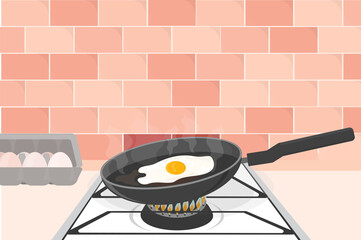

2022/10/21
vscodeの使い方
programming


←html・cssのフィイルを作ろうとしてる人 「どうやってファイルを作成するんだろう？コードを書くときどうやるんだろう？」
このblogではそういった疑問を解決していきます。
vscodeの使い方
今回の道標
- ①vscodeって何？
- ②どうやって飾り付けするの？
- ③最後にまとめ
記事の信頼性
僕はプログラミング業務に携わってきました。blogを運営する上で、必須であるvscodeの使い方を詳しく説明していきます。
前置きメッセージ
この記事では「vscodeってなんだって方に伝わるように、なるべくわかりやすく書きました」でも、少しここがわからなかったって思った人は、僕に連絡ください。
①vscodeって何？

そもそもvscodeとは、html・cssの他にも、いろんな言語のファイルを書くツールのようなものです。実際は、デスクトップにファイルを準備して、vscodeにスライドして、コードを書いていきます。
具体的な使い方

vscodeをインストールします。ここでは、わかりやすくするため、デスクトップの真ん中に持ってきました。クリックすると、、、

このような画面になります。ここに、デスクトップに作成した新規フォルダーをスライドしてみてください。すると、、、

このような画面になります。これで、ファイルの中を編集できるようになります。
htmlファイルを作ってみる

新規ファイルを作って新しいhtmlファイルを作ってみよう！上記と同じ手順で、デスクトップに新規フォルダーを作成し、vscodeにスライドしてください。

vscodeの左上の紙にプラスがついているアイコンがあると思うので、押してみてください。そしてそこに、「index.html」(ドット忘れずに)という名前のファイルを作ってください。
「!」を打ってください。そしてタブキーを押すとhtmlの構成が表示されます。

bodyタグの間に、h1タグを作って,helloって書いてみてください。

そして新規フォルダーの中にあるindex.htmlを開いてみてください。すると上記のようにhelloが表示されると思います。
②どうやって飾り付けするの？
なんかhelloだけだとサイトってかんじがしなくて、ものたりないですよね？そんなときは、、、
cssです！
このcssという言語はサイトにデザインをつける機能を持っています。htmlファイルにcssファイルを繋げる内容をコードに書くと、サイトがオシャレに生まれ変わります。今見てくれてるこのサイトもhtml・cssで編集されています。
なんか興味持ったって方は、プログラミング初心者でも挫折しない学び方って記事読んでみてください。
③最後にまとめ
vscodeの使い方はわかったでしょうか。まだわからないと思った人はどんどん質問してください。
よくある質問 : Twitterで募集します

相談

よく読まれてる記事

2022 10/14
[初心者用]プログラミングの勉強の仕方
2022 10/16
ネットワークビジネスは根本を知らないと稼げないままだ！
archive
- 2022 11月
- 2022 10月